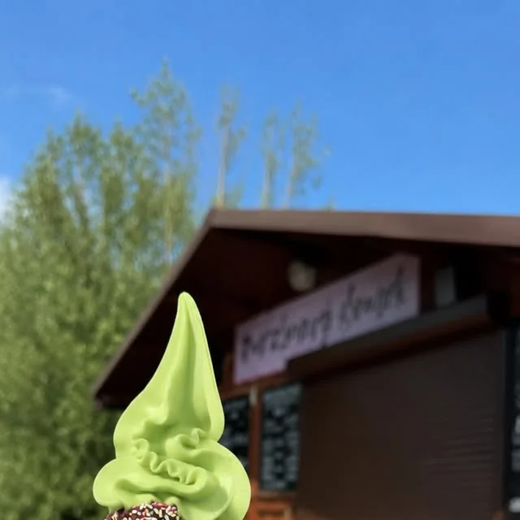
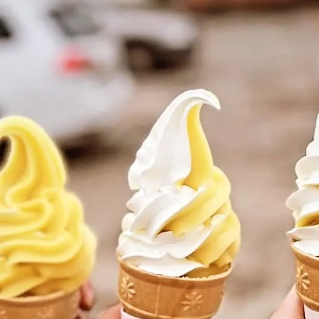
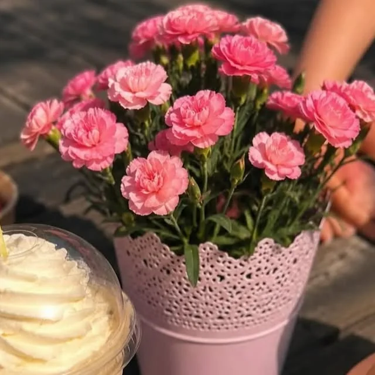
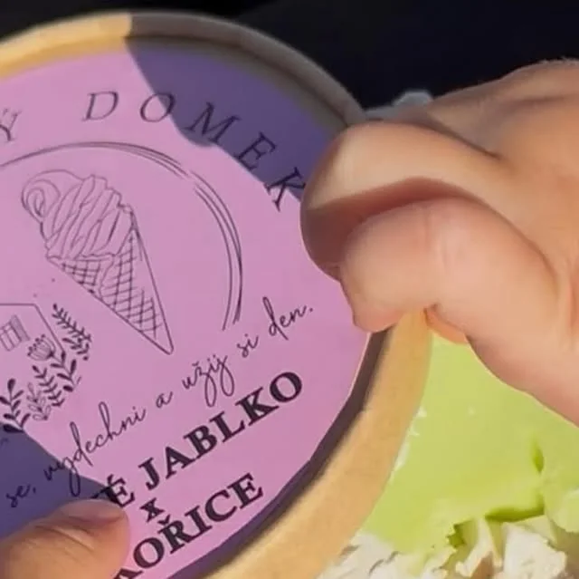
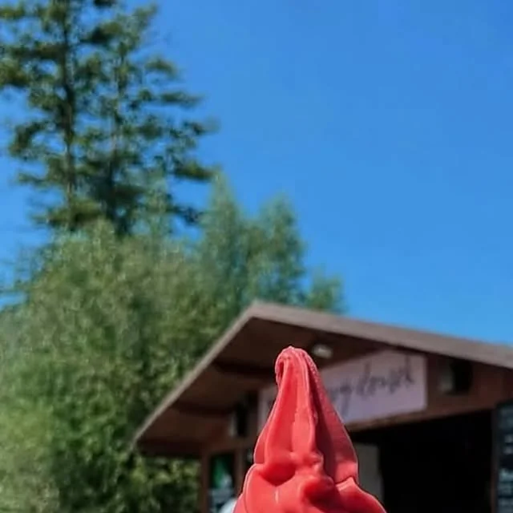
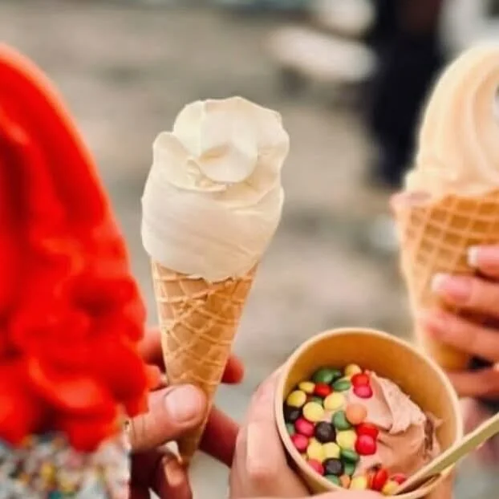
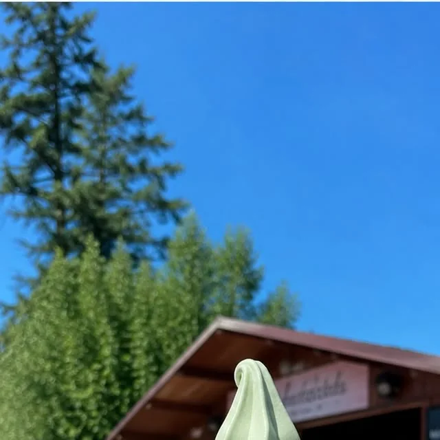
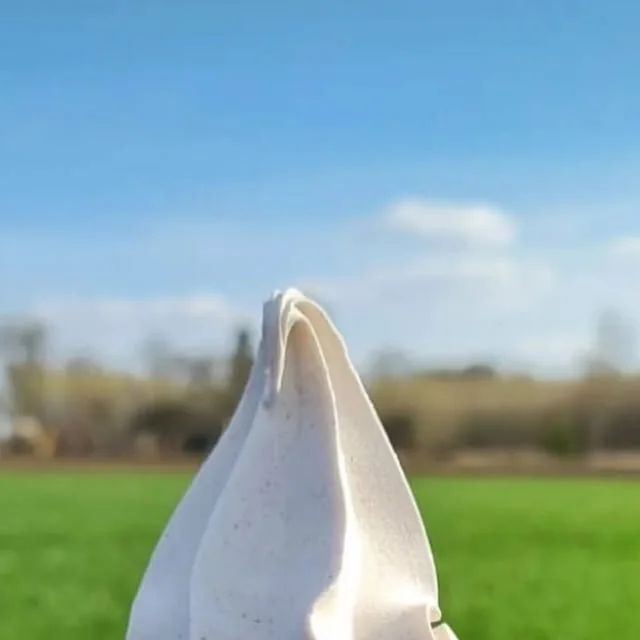

Točená zmrzlina
Tři stroje, na každém dvě příchutě. V kornoutu, v misce, nebo jako mix.
od 35 KčDenně 13:00–18:00
Točená zmrzlina ze tří strojů. Stojíme u přívozu přes Labe v Nučnicích — kousek od cyklostezky, s terasou a parkovištěm.
Další dvojice měníme skoro každý den — co je dnes, píšeme na Instagram.



Dnes točíme
Jahoda s vanilkou je stálice, další dvě dvojice měníme skoro každý den. Co je dnes, píšeme na Instagram.
Nabídka
Tři stroje, na každém dvě příchutě. V kornoutu, v misce, nebo jako mix.
od 35 Kč
Když je venku třicet. Vychlazená, s brčkem, na cestu po cyklostezce.
na horko
Ledové frappé se šlehačkou nebo kafe na terase, než přijede přívoz.
k posezení
Zmrzlina s víčkem domů do mrazáku — u okénka i v automatech.
nonstopCeník
„Nejlepší zmrzlina na Litoměřicku a přitom za super cenu. Děti si užijí všemožné kombinace polev a posypů.“Pavel Š. · Firmy.cz
Tabuli u okénka přepisujeme podle sezóny — platí vždy ta. Platit můžete hotově i kartou.
Točená zmrzlina
Tip na výlet
Projeďte si trasu podél Labe. Zastávka u nás je přesně uprostřed.
Zastavuje pár kroků od domku a vozí i kola, kočárky a psy. Provozuje ho obec Travčice, v silném větru nebo dešti nejezdí.
Duben: pá 13–19, so–ne 10–19 · Květen: pá–ne 10–20 · Červen–srpen: denně 9–20 · Září–říjen: jen víkendy
25 Kč dospělý · 20 Kč děti 6–18 a senioři · zdarma děti do 6 let · 10 Kč kolo, pes, kočárek
Automaty 24/7
Naši zmrzlinu v kelímcích prodává pět samoobslužných automatů. Berou jen kartu a jedou ve dne v noci.
Pro obce, koupaliště, kempy a firmy
Hledáme další místa, kde by se lidem hodila dobrá zmrzlina kdykoli během dne i noci. Napište nám, kde máte místo, a domluvíme se.
Ze stánku





„Velmi milá obsluha, příjemné prostředí blízko Labské cyklostezky. Zmrzlina vynikající, jinam už ani nejezdím.“
Jindřich Z. · Firmy.cz
„Great ice cream. Changing flavors every week. Fruit flavors taste delicious, not too sweet.“
Martijn v. d. B. · Google
„V létě je tu obvykle fronta, ale obsluhu tvoří rychlý a sehraný tým, takže nečekáte dlouho.“
Francouz v Ústí · Google
Kontakt
Ano, u okénka i v automatech. Automaty berou jen kartu, u domku vezmeme i hotovost.
Klidně. Sedí se venku na terase a v altánku. Přívoz psa převeze za 10 Kč.
Točená je mléčná. Na složení a alergeny se zeptejte u okénka, rádi vám je ukážeme.
Po Labské cyklostezce z Litoměřic (9 km) nebo z Roudnice (10 km). Z druhého břehu přívozem od Nučniček.
V létě o víkendu bývá fronta, ale odbavení je rychlé — lidé u nás obvykle stráví kolem 15 minut.
Napište nám na zmrzlinovydomek@seznam.cz, o jakou akci jde, a domluvíme se.